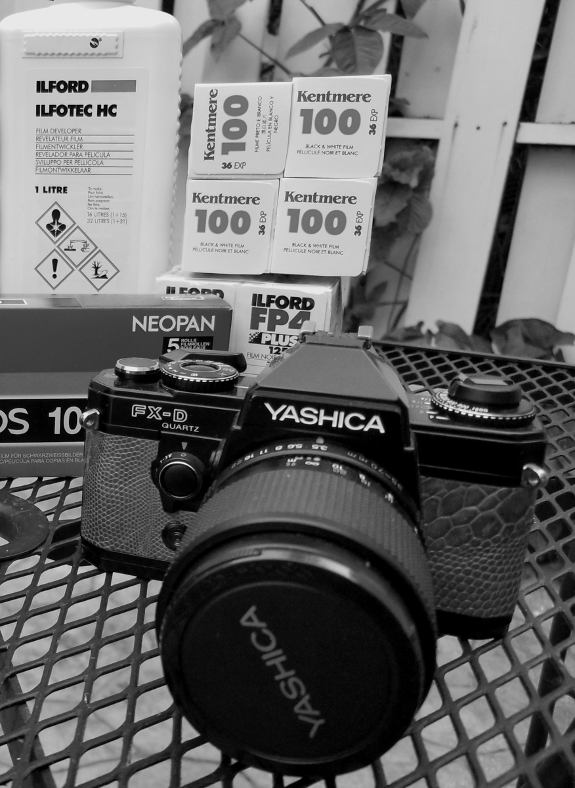

|

|
I needed a tool to document my film scans so that I
could later come back and see what camera, lens, developer
was used in the process. I came up with this tool which was
originally writen in C# for Windows but after I migrated to
Ubuntu I needed a tool that worked on Linux so I
re-wrote FilmScanData in Electron which is cross platform.
FilmScanData is free but if you find it useful consider donating a dollar or two which will help with future releases and development of other tools that are in the works. |
FilmScanData
Version: 1.0.0 Coded by: Jason Ritchie Coded in: Electron |